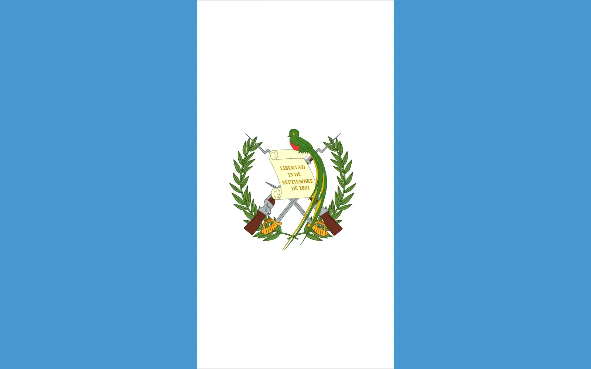

Rebeca Arredondo
About Me
Hi! I'm from Guatemala, a proud mom and wife with three amazing kids. I speak English, Spanish, and a little bit of Portuguese, which I picked up while living in Portugal. I love baking, exploring new places, and spending quality time with my family — they’re my greatest adventure.
Guatemala
Guatemala is a beautiful and vibrant country known for its breathtaking landscapes, rich culture, and warm-hearted people. It’s home to stunning volcanoes, lush forests, and colorful colonial towns. The weather is mild year-round, especially in the highlands, making it feel like spring almost every day. Guatemalans are known for their hospitality, strong traditions, and deep connection to their Mayan heritage.
